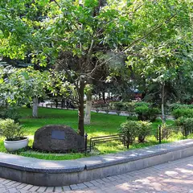

У метро · ЦАО
Куда сходить у метро «Маяковская»
Для 29 мест из нашего каталога ближайшая станция — «Маяковская» (ЦАО): 11 ресторанов и кафе, 4 бара, 4 кофейни и 3 развлечения. Например, «Патриаршие пруды», «Музей Булгакова» и «Облако». Недорогих, примерно до 1 500 ₽ на человека, — 8. 17 готовых планов проходят через эту станцию — например, «Патрики и бар с видом на пруд», с маршрутом пешком между точками.
- 29 мест
- 17 планов
Места у метро «Маяковская» 28
Большой Патриарший пер.
Пруд из «Мастера и Маргариты»: скамейки, кафе вокруг, зимой — каток.
Подробнее и маршрут: Патриаршие прудыПозвать сюда: Патриаршие пруды
Фото: Dimа, CC BY-SA 3.0 · Wikimedia Commons
Большая Садовая ул., 10
«Нехорошая квартира» №50, где жил Булгаков. Вт–вс, по четвергам до 21:00.
Подробнее и маршрут: Музей БулгаковаПозвать сюда: Музей Булгакова
Фото: Usolt, CC BY 3.0 · Wikimedia Commons
ул. Большая Садовая, 5
Ресторан и терраса на крыше гостиницы «Пекин» у Маяковской.
Подробнее и маршрут: ОблакоПозвать сюда: Облако
Фото: Vladimir OKC, CC BY-SA 3.0 · Wikimedia Commons

ул. Большая Садовая, 16
Небольшой сад с фонтаном у Театра Моссовета на Садовом кольце.
Подробнее и маршрут: Сад «Аквариум»Позвать сюда: Сад «Аквариум»
Фото: Vladimir OKC, CC BY-SA 3.0 · Wikimedia Commons
Большой Козихинский пер., 30
Камерный театр новой драмы: зал на 85 мест, актёры в паре метров от вас.
Подробнее и маршрут: Театр «Практика»Позвать сюда: Театр «Практика»
Фото: Valera N. Trubin, CC BY-SA 4.0 · Wikimedia Commons
Большой Патриарший пер., 7, стр. 1
Ресторан в павильоне прямо на Патриарших прудах: открыт с 9:00 до полуночи, по воскресеньям — бранчи.
Подробнее и маршрут: ERWIN.ПавильонПозвать сюда: ERWIN.Павильон
Малая Бронная ул., 28/2
В гиде Michelin 2021
Бистро на Патриарших.
Подробнее и маршрут: Margarita BistroПозвать сюда: Margarita Bistro
ул. Малая Бронная, 28
Новое
Небольшой коктейльный бар у Патриарших прудов: из окна видно пруд, есть терраса. Роллы и поке, по вечерам DJ, работает до 6 утра.
4-я Тверская-Ямская ул., 6/12
Светлое кафе с бранчами, выпечкой и вином у Маяковской. 9–23.
ул. Садовая-Кудринская, 32, стр. 2
Новое
Уютное кафе в голубых тонах у «Маяковской»: завтраки с 9 утра, настольные игры и негромкая музыка — подходит для долгого разговора.
1-я Тверская-Ямская ул., 7 (через холл банка, цокольный этаж)
Новое
Квесты сети «Взаперти» у «Маяковской»: «Академия Гудини» для 2–4 игроков, «Охотники на привидений» и экшн «По ту сторону экрана».
Подробнее и маршрут: Взаперти на ТверскойПозвать сюда: Взаперти на Тверской
ул. Большая Садовая, 16
Новое
Театр в саду «Аквариум» у «Маяковской»: основная и камерная сцены. До спектакля — прогулка по саду, после — Патриаршие пруды в 10 минутах.
Подробнее и маршрут: Театр МоссоветаПозвать сюда: Театр Моссовета
Триумфальная пл., 2
Новое
Комедийный театр у «Маяковской»: лёгкие смешные постановки для компании или непринуждённого свидания. Кроме большой сцены есть камерный «Чердак Сатиры».
Большая Садовая ул., 10
High heels для начинающих: разовое занятие от 590 ₽.
1-я Тверская-Ямская ул., 2, стр. 1
Гастробар у Маяковской: кухня под бокал вина для свиданий и встреч после работы.
Триумфальная пл., 4/31
Классическое кафе в здании Концертного зала Чайковского — удобно до или после концерта.
Подробнее и маршрут: Кафе «Чайковский»Позвать сюда: Кафе «Чайковский»
ул. Чаянова, 12
Минималистичное кафе у Новослободской: завтраки, вино и спортивные трансляции.
Подробнее и маршрут: Культурный кодПозвать сюда: Культурный код
ул. Красина, 3, стр. 1
Светлый ресторан с завтраками весь день и крытой террасой у Маяковской. 8–23.
Малая Дмитровка, 20
Вино и живая музыка по четвергам, пятницам и субботам.
Трёхпрудный пер., 15
Камерный ресторан в Трёхпрудном переулке с сезонным меню.
2-я Брестская ул., 37/1
Минималистичное израильское кафе: флетбреды, хумус и завтраки.
Благовещенский пер., 3, стр. 1
Ритмы Латинской Америки и испанская кухня у Маяковской.
Большая Садовая ул., 14, стр. 10
Караоке-бар на Садовом, в двух шагах от студии танцев.
Подробнее и маршрут: Karaoke LightsПозвать сюда: Karaoke Lights
Ермолаевский пер., 7
Кофейня на Патриках, фасад которой каждый сезон превращают в фотозону.
Малая Бронная ул., 8/1
Авторский ресторан Аркадия Новикова на Патриарших.
Тверская ул., 27, стр. 2
Двухэтажный ресторан комфорт-фуда с необычными коктейлями у Маяковской. 10–00.
Малый Козихинский пер., 8/18
Небольшой ресторан на Патриарших с сильной картой шампанского.
Большой Патриарший пер., 4
Американская кондитерская: сытные завтраки, торты и много чая.


Готовые планы 12 из 17
- Патриаршие пруды · Пруд и сквер · м. Маяковская
- 1 минута пешкомКиану · Коктейльный бар
Вечерний круг вокруг Патриарших прудов, а потом маленький бар «Киану», из окна которого видно пруд: коктейли, роллы и диджей до 6 утра.
Открыть план: Патрики и бар с видом на прудПозвать сюда: Патрики и бар с видом на пруд
Фото: Dimа, CC BY-SA 3.0 · Wikimedia Commons
- Московский планетарий · Планетарий · м. Баррикадная
- 11 минут пешкомShort talk · Кафе
Звёздное небо под огромным куполом планетария, а потом кафе Short talk: кофе, настольная игра и негромкая музыка выручат, если разговор сначала не клеится.
Открыть план: Планетарий и настолкиПозвать сюда: Планетарий и настолки
Фото: A.Savin, Free Art License · Wikimedia Commons
- Патриаршие пруды · Пруд и сквер · м. Маяковская
- 1 минута пешкомERWIN.Павильон · Ресторан на пруду
Неспешный круг вокруг пруда из «Мастера и Маргариты», а потом бранч в ресторане-павильоне Erwin прямо у пруда — он открыт с 9:00.
Открыть план: Бранч на ПатрикахПозвать сюда: Бранч на Патриках
Фото: Dimа, CC BY-SA 3.0 · Wikimedia Commons
- Музей Булгакова · Музей · м. Маяковская
- 8 минут пешкомPinch · Ресторан
Сначала «Нехорошая квартира» в Музее Булгакова, а потом восемь минут пешком до Pinch у Патриарших: завтраки там подают до 16:00, так что бранч получится в самый раз.
Открыть план: Булгаков и поздний бранчПозвать сюда: Булгаков и поздний бранч
Фото: Usolt, CC BY 3.0 · Wikimedia Commons
- Музей Булгакова · Музей · м. Маяковская
- 8 минут пешкомЗойка · Ресторан
«Нехорошая квартира» №50 в музее Булгакова (по четвергам открыт до 21:00), а потом ужин в «Зойкиной квартире» на Патриарших, где остановилось время.
Открыть план: Булгаковский вечерПозвать сюда: Булгаковский вечер
Фото: Usolt, CC BY 3.0 · Wikimedia Commons
- Патриаршие пруды · Пруд и сквер · м. Маяковская
- 3 минуты пешкомGrand Cru · Ресторан высокой кухни
Прогулка по Патрикам и ужин в Grand Cru с одной из лучших винных карт Москвы.
Открыть план: Вино Grand CruПозвать сюда: Вино Grand Cru
Фото: Dimа, CC BY-SA 3.0 · Wikimedia Commons
- Московский планетарий · Планетарий · м. Баррикадная
- 11 минут пешкомERWIN.Павильон · Ресторан на пруду
Романтика под куполом планетария и ужин у Патриарших прудов.
Открыть план: Звёзды и ПатрикиПозвать сюда: Звёзды и Патрики
Фото: A.Savin, Free Art License · Wikimedia Commons
- Музей Булгакова · Музей · м. Маяковская
- 6 минут пешкомCopen 57 · Датский ресторан
Музей Булгакова, прогулка мимо Патриарших и поздний обед в крошечном датском ресторане на тридцать мест.
Открыть план: Нехорошая квартира и датская кухняПозвать сюда: Нехорошая квартира и датская кухня
Фото: Usolt, CC BY 3.0 · Wikimedia Commons
- Музей Булгакова · Музей · м. Маяковская
- 7 минут пешкомПатриаршие пруды · Пруд и сквер
- 5 минут пешкомPinch · Ресторан
«Нехорошая квартира» №50 в Музее Булгакова, потом круг у Патриарших прудов из «Мастера и Маргариты» и поздний завтрак в Pinch — их там подают до 16:00.
Открыть план: Нехорошая квартира и ПатрикиПозвать сюда: Нехорошая квартира и Патрики
Фото: Usolt, CC BY 3.0 · Wikimedia Commons
- Патриаршие пруды · Пруд и сквер · м. Маяковская
- 8 минут пешкомAФINA · Средиземноморский ресторан
Круг вокруг пруда и средиземноморский обед в AФINA.
Открыть план: Отпуск на ПатрикахПозвать сюда: Отпуск на Патриках
Фото: Dimа, CC BY-SA 3.0 · Wikimedia Commons
- Патриаршие пруды · Пруд и сквер · м. Маяковская
- 1 минута пешкомERWIN.Павильон · Ресторан на пруду
Круг вокруг Патриарших и ужин в павильоне прямо на воде.
Открыть план: Павильон на прудуПозвать сюда: Павильон на пруду
Фото: Dimа, CC BY-SA 3.0 · Wikimedia Commons
- Ekonika Yogurt Bar · Йогурт-бар · м. Тверская
- 3 минуты пешкомПатриаршие пруды · Пруд и сквер
- 5 минут пешкомGrace Bistro · Средиземноморское бистро
Греческий йогурт с выпечкой во флагмане Ekonika, круг вокруг Патриарших, а потом обед в средиземноморском бистро на Спиридоновке.
Открыть план: Патрики: йогурт-бар и Grace BistroПозвать сюда: Патрики: йогурт-бар и Grace Bistro
Фото: Dimа, CC BY-SA 3.0 · Wikimedia Commons

Компьютерные клубы 1
Тверская ул., 30/2, стр. 1 (2 этаж)
Круглосуточно
Рядом с «Маяковской». Около 40 ПК в нескольких зонах (Premium на 16 ПК, буткемп на 6 ПК), мониторы до 540 Гц, клубные аккаунты. От 139 ₽/час. Круглосуточно.
Подробнее и маршрут: Центр Киберспорта МаяковскаяПозвать сюда: Центр Киберспорта Маяковская
Как позвать
- Выбери план, место или событие — в карточке адрес, цены и маршрут в Яндекс Картах.
- Нажми «Позвать сюда» — соберётся приглашение-игра для свидания или голосование для компании.
- Отправь ссылку в любой мессенджер: тебе ответят, а компания отметит, куда и когда может. Бесплатно и без регистрации.